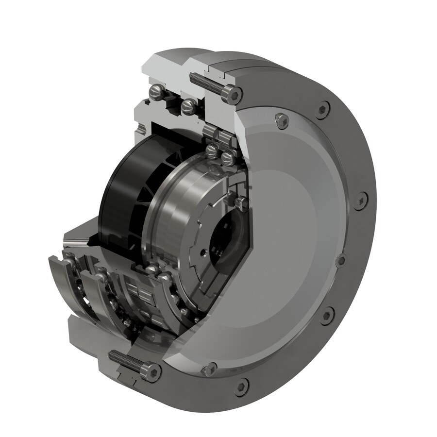
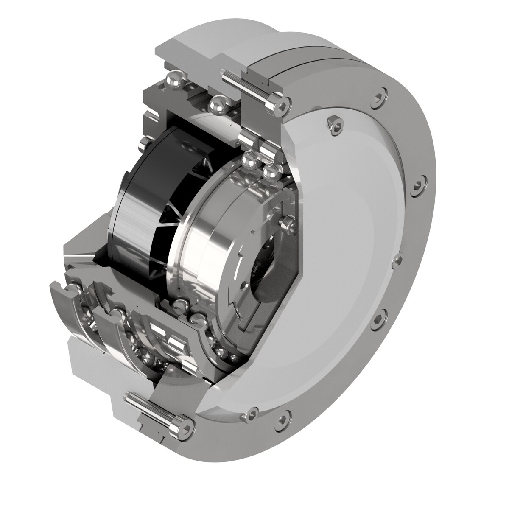
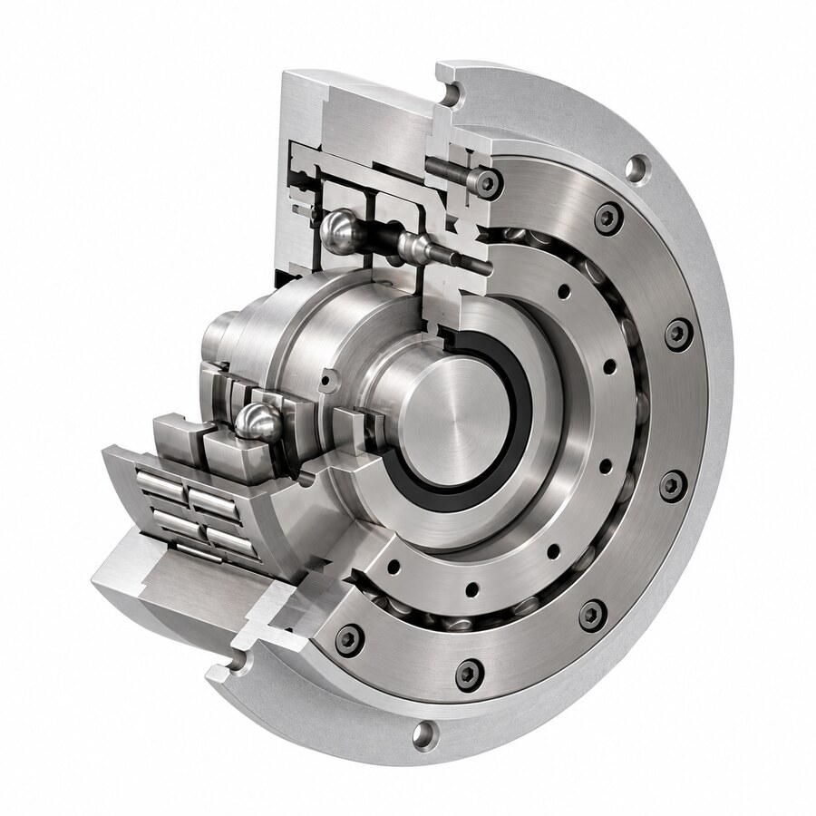
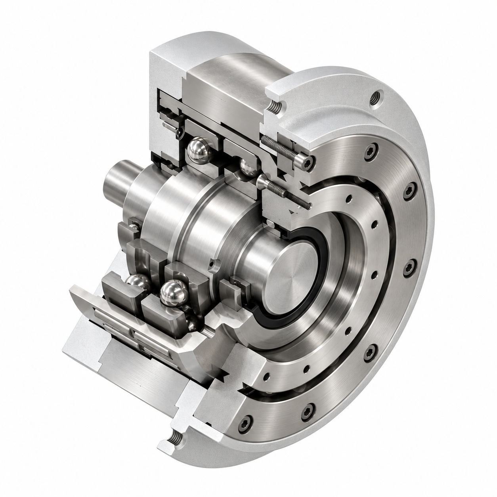

GX-01
С полым валом
Сквозное отверстие для кабелей и пневматики — для сочленений, где важна компактная прокладка коммуникаций.
Компактные редукторы с малым люфтом и встроенными опорами для сочленений роботов, манипуляторов и поворотных осей. Проектируем, изготавливаем прототипы и испытываем под задачу заказчика.

Два базовых исполнения на стадии прототипов. Размеры, передаточное число и посадочные места адаптируем под ваш привод.

Сквозное отверстие для кабелей и пневматики — для сочленений, где важна компактная прокладка коммуникаций.

Плоский корпус и фланцевый выход с крепёжной окружностью — для прямой установки двигателя и нагрузки.

Короткий осевой габарит: опоры и передача собраны в одном корпусе.
Встроенный выходной подшипник воспринимает радиальные, осевые нагрузки и опрокидывающий момент.
Малый люфт и стабильная передача момента для точного позиционирования.
Фланцевое крепление и уплотнённый корпус — готовый модуль для сочленения.
Суставы манипуляторов и коботов, оси сварочных, сборочных и паллетирующих комплексов.
Поворотные приводы и компактные приводные узлы для промышленной автоматизации.
Поворотные столы, 4-я и 5-я оси, позиционеры и узлы точного позиционирования станков с ЧПУ.
Восстановление ресурсных узлов в эксплуатируемом парке роботов и мехатронных систем.
ООО «Гирокс» разрабатывает отечественные прецизионные редукторы. Проект поддержан Фондом содействия инновациям по программе «Старт».
Тема НИОКР: «Разработка и испытания прототипов редукторов с промежуточными телами качения: волновые и планетарно-цевочные исполнения со свободной обоймой».
Сейчас идёт изготовление и испытания прототипов. Открыты к пилотным проектам с производителями роботов и оборудования.
Пришлите требования к моменту, габаритам и точности — подберём исполнение и подготовим коммерческое предложение.
Опишите задачу: требуемый момент, передаточное число, габариты и точность. Можно приложить эскиз или ТЗ.
Написать на info@gear-ox.ru